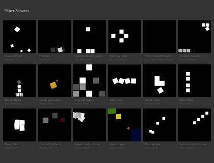

Paper Squares critique
Only two weeks ago we took our first look at the Paper.js library. Today we’ll discuss your Paper Squares homework as a group. How do your animations here compare to those very first construction paper posters you made? Is there a sense of continuity in your work, or did the change in medium cause you to invent anew? Did you satisfy all of the assigned criteria? What were you intending to communicate and is that coming across to the majority of us? Did you surprise yourself?
 Paper Squares gallery
Guest critic, Andrew Shurtz
Today we have guest critic Andrew Shurtz, a graphic designer and cofounder of the influential We Have Photoshop collective. Take advantage of his comments and be sure to ask him questions. Here are two of his related works.
Moments in Love.Limits. A quote by Brian Eno performed live using a FM3 buddha machine, DVD player, and a CRT TV.
Postscript
Thank you for making good work; was great to see you put the effort in. Here are links to two references we discussed during the critique that I said I’d post afterward. The first is Monty Python animation, by Terry Gilliam. The second:
Don Hertzfeldt—Billy’s Balloon. A search for any Don Hertzfeldt work on YouTube will yield many fascinating results. This one in particular is a stellar guide to building tension and implying spacial boundaries. How do we know the balloon is traveling ever higher? What objects in the background demonstrate this? How do the “camera” cuts demonstrate this? How are tension and timing related? This animation also delivers on the dark humor equation oftragedy + time = comedy.
Motion studies
Andrew has kindly compiled some motion studies that may be useful to you going forward. Have a look and think about how these influences might inform revisions on your Paper Squares (that is, if you choose to revise) or future animation assignments.
Busby Berkeley—Dance until the dawn (1931). Busby Berkeley’s choreography is a great example of movement that can be incredibly dense and detailed but still orderly and not chaotic. It’s especially nice to see how the individual dancers can actually vary a great deal (how analog!) but the whole still feels like a solid unit.
Busby Berkeley and Artie Shaw.
Maple leaves falling. As obvious as this sounds just studying the way things fall in nature can be extremely useful.
Traffic in India. Pretty much the opposite of Busby Berkely—very busy and very chaotic.